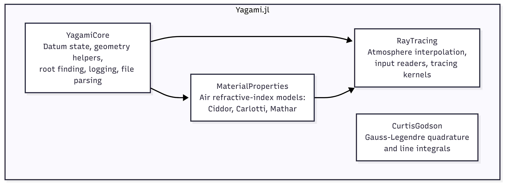

Yagami
Yagami.jl is a Julia package for 2D atmospheric ray tracing and related support calculations used in the CAIRT workflow. The package combines ellipsoidal Earth geometry, refractive-index models for air, atmospheric field interpolation, file readers for existing mission data formats, and Curtis-Godson-style quadrature utilities.
At the top level, Yagami re-exports the parts of the package that are most useful for scientific workflows:
- ellipsoid and datum utilities from
YagamiCore - refractive-index models from
MaterialProperties - atmosphere construction, file readers, and tracing kernels from
RayTracing - quadrature helpers from
CurtisGodson
Package Map

Typical Workflow
The main package workflow is:
- Load or construct atmospheric fields.
- Convert those fields into an
AtmosphereSetting. - Build a refractive-index grid over wedge cells.
- Trace each line of sight through the atmosphere.
- Post-process the sampled ray path or integrate along it.
In practice, that usually means either:
- calling
RayTracingProblem(path)to read an existing dataset, or - building an atmosphere manually with
create_atmosphere
Quick Start
Refractive Index
Use MaterialProperties directly when you only need the refractive index of air at a given state:
using Yagami
n = refractive_index(Ciddor(), 288.15, 101325.0, 10.0, 0.0, 450.0)Current unit conventions in the code are:
- temperature in K
- pressure in Pa
- wavelength in um
- humidity as a fraction in
[0, 1] - CO2 concentration in ppm
The code currently treats humidity as a fraction, even where some older docstrings still describe it as a percentage.
Build an Atmosphere
create_atmosphere converts gridded atmospheric fields into interpolation objects that the ray tracer can query at arbitrary azimuth and altitude.
using Yagami
θᵢ = create_radii(Float64; θmin=0.0, θmax=350.0, radii=36)
hᵢ = create_hlevelset(Float64; hmin=4.0, hmax=120.0, levels=20)
temperatureᵢ = [220.0 + 0.02 * θ - 0.6 * h for θ in θᵢ, h in hᵢ]
pressureᵢ = [101325.0 * exp(-h / 7.0) for θ in θᵢ, h in hᵢ]
atm = create_atmosphere(
θᵢ=θᵢ,
hᵢ=hᵢ,
temperatureᵢ=temperatureᵢ,
pressureᵢ=pressureᵢ,
humidity=0.0,
co2ppm=400.0,
wavelength=10.0,
knots_θ=θᵢ,
knots_h=hᵢ,
)
n = grid_refractiveindex(atm; model=Ciddor())Important grid conventions:
knots_hmust be sorted in descending orderknots_θmust be sorted in ascending order- azimuth is periodic and wrapped into
[0, 360) - pressure interpolation uses logarithmic interpolation in altitude
Read a Ray-Tracing Problem
When the input data already exists in a supported mission format, use RayTracingProblem:
using StructArrays
using Yagami
problem = RayTracingProblem("path/to/cairt.nc")
results = StructArray(fill(SimpleResult(), 200, problem.nlos * problem.nscans))
raytracing!(results, problem)
altitude_profile = altitudelocal(results, 1)
azimuth_profile = azimuthlocal(results, 1)SimpleResult stores one sampled point along a ray, including:
- point coordinates
- direction vector
- altitude and azimuth on the ellipsoid
- path length increment
- wedge indices
iandj - flags describing whether the crossing was level-based and whether the ray was descending
Main Components
YagamiCore
YagamiCore provides the package-wide geometric and numerical foundation:
- WGS84-based ellipsoid constants
- mutable datum state via
setdatum!,setmajoraxis!,setminoraxis!, andseteccentricity²! - geometric helpers for nadir and limb viewing conventions
- Brent-style root-finding and minimization support
- lightweight file and logger utilities used by the readers
The datum is stored in global references. If you change it, the new ellipsoid is used by later calculations in the current Julia session.
MaterialProperties
MaterialProperties implements the refractive-index models used by the ray tracer:
Ciddor()for visible to infrared air refractivity with humidity and CO2Carlotti()for a simpler pressure/temperature-based modelMathar013_025(),Mathar028_042(),Mathar043_052(),Mathar075_141(), andMathar160_240()for wavelength-range-specific infrared models
The public interface is:
refractive_index(model, temperature, pressure, wavelength, humidity, co2ppm)refractive_index!(model, out, temperature, pressure, wavelength, humidity, co2ppm)
RayTracing
RayTracing is the operational core of the package. It contains:
AtmInterpolatefor atmospheric interpolation on azimuth-altitude gridsAtmosphereSettingfor grouped temperature, pressure, humidity, CO2, and wavelength fieldsgrid_refractiveindexfor cell-wise refractive-index gridsRayTracingProblemfor a complete tracing setupraytracing!andraytracing_parallel!for the tracing kernels- Earth-shape approximations
Fukushima()andBowring()
RayTracingProblem bundles:
- the source filename or folder
- the atmosphere object
- the precomputed refractive-index grid
- satellite positions and viewing directions
- expected tangent heights and azimuths
- scan and line-of-sight counts
- an optional logger
CurtisGodson
CurtisGodson currently provides:
QuadraturePointsget_quadrature_pointslinintegral
These helpers are independent from the ray tracer and can be used anywhere a 1D Gauss-Legendre quadrature is needed.
Supported Input Formats
RayTracingProblem currently supports two input formats.
NetCDF via NCFormat()
RayTracingProblem("file.nc") defaults to NCFormat(). The reader expects a CAIRT-style NetCDF file with groups and variables used by the current code:
- group
scanswith tangent points, scan azimuths, and view angles - group
atmwithz,phi,pressure, andtemperature - group
orbitwith satellite radius
During import, the reader:
- converts pressure from hPa to Pa
- sorts altitude in descending order
- wraps azimuth into
[0, 360)and sorts it in ascending order - builds an
AtmosphereSetting - precomputes the refractive grid used by the tracer
Geofit via GeofitFormat()
RayTracingProblem("folder", GeofitFormat()) expects a directory with INP_FILES/ containing at least:
in_alt.datin_lat.datin_pres.datin_temp.datin_vmr_prof.dat
and also uses:
in_levels.datin_radii.datorbit.dat
The Geofit reader converts the legacy text files into the same RayTracingProblem representation used by the NetCDF path.
Current Implementation Notes
There are a few details that are useful to know when using the current package:
RayTracingProblem(...; model=..., meantype=...)stores those choices on the problem object, but the current NetCDF and Geofit readers precomputeproblem.refractivewithCiddor()andGeometricMean()internally.earthmodelis used by the tracing kernels and currently has the clearest effect on runtime behavior.- The low-level constructors are more flexible than the file readers. If you need tighter control over atmospheric fields or refractive-grid generation, build an
AtmosphereSettingand callgrid_refractiveindexexplicitly.
References
Python scripts used to validate the material-property models are adapted from the Refractive Index Database created by Mikhail Polyanskiy.[1]
constants."](https://www.nature.com/articles/s41597-023-02898-2) Scientific Data 11.1 (2024): 94.02898-2
- 1Polyanskiy, Mikhail N. ["Refractiveindex. info database of optical